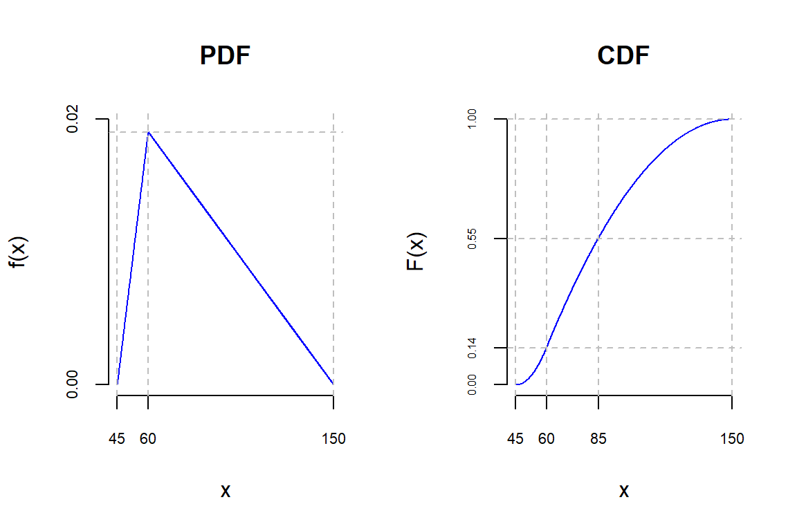

The triangular distribution (also known as the Simpson distribution) is a continuous probability distribution. The graph of the probability density function looks like a triangle and gives this distribution its name.
The probability density function moves between a minimum \(a\), a maximum \(b\) and the mode \(c\) (the value with the highest probability). The \(y\) axis shows the density of the respective probability for a value \(x \in [a, b]\).
For a triangular distribution, the maximum of the probability density is at the value of the mode. For the lower and upper limit, the value of the probability density is zero.
When very little concrete data is available to determine the distribution function \(f(x)\) of a random variable \(x\), the triangular distribution is often used in practice. The triangular distribution is also a popular distribution in Monte Carlo simulation.
Triangular distributions can take the following forms: symmetric distribution, right-skewed distribution, and left-skewed distribution.
Probability Density Function (PDF)
The probability density function of the triangular distribution in the interval \(x \in [a, b]\) is defined by
\[\begin{equation} \tag{1.1} f(x) = \begin{cases} \dfrac{2(x-a)}{(b-a)(c-a)} & \text{for } x \in [a, c] \\ \dfrac{2(b-x)}{(b-a)(b-c)} & \text{for } x \in (c, b] \\ {0} & \text{else} \end{cases} \end{equation}\]
PDF (probability density function)
The PDF (probability density function) in the triangular distribution shows how the probability is distributed across different values within a given interval. The triangular distribution is a continuous probability distribution in which the probability first increases linearly, then peaks, and then decreases linearly. The shape of the triangular distribution is determined by three parameters: the left tail value \(a\), the right tail value \(b\), and the mode \(c\) (the value with the highest probability).
Cumulative Distribution Function (CDF)
By integration, the cumulative distribution function \(F(x)\) from equation (1.1) becomes
\[\begin{equation} \tag{1.2} F(x) = \begin{cases} \dfrac{(x-a)^2}{(b-a)(c-a)} & \text{for } x \in [a, c] \\ 1-\dfrac{(b-x)^2}{(b-a)(b-c)} & \text{for } x \in (c, b] \\ {0} & \text{else} \end{cases} \end{equation}\]
Note
The cumulative distribution function (CDF) of a probability distribution indicates the probability that a random variable will take a value less than or equal to a given value. The CDF of a triangular distribution increases slowly at first, peaks at \(c\), and then decreases until it reaches the value 1 when the random variable reaches the maximum value \(b\). The meaning of the CDF is that it indicates the cumulative probability that the random variable will take \(a\) value less than or equal to a certain value.
Mode
The mode is the value that occurs most frequently. The mode of a triangular distribution is the value of \(x\) at which the probability density function (PDF) of the reaches its maximum value.
At the point \(c\) in \([a,b]\) (mode), the probability distribution \(f(x)\) has its maximum, which is given by \[ \begin{equation} \tag{1.3} F(\infty) = \int_{- \infty}^\infty {f(x)}{dx} = \frac{b-a}{2} \cdot f(c) = 1 \end{equation} \]
results to \[ \begin{equation} \tag{1.4} f(c) = \frac{2}{b-a} \end{equation} \]
The mean and median of a triangular distribution are not necessarily the same as the mode. The mean and median depend on the specific parameters of the distribution, while the mode depends only on the range \([a, b]\).
Expected Value
The expected value is the weighted average of all possible outcomes, taking into account the probabilities of the outcomes. For a triangular distribution, the expected value is calculated by adding the values of the three parameters of the distribution (minimum, maximum and mode) and dividing by 3. \[ \begin{equation} \tag{1.6} E(x) = \frac{a+b+c}3 \end{equation} \]
Mean
The mean is the arithmetic average of all observed values. In the case of a triangular distribution, the mean depends on the position of the mode in the distribution. If the mode is exactly halfway between the minimum and maximum, the mean is equal to the expected value. \[ \begin{equation} \tag{1.7} \bar{x} = \frac{b-a}2 \end{equation} \]
Note
In an asymmetric triangular distribution, the expected value and the mean are not identical. This is only the case with a symmetric triangular distribution. In general, the expected value of a triangular distribution is a better measure than the mean to indicate the average value of the distribution.
Using the triangular distribution in practice
The triangular distribution is used for management decisions where the Best Case, the Worst Case and the Most Likely Case are known or can be estimated.
Example
A software developer estimates that it will take an average of 60 hours to program the application. In the best case, he estimates a processing time of 45 hours, but if problems occur, the effort can increase to 150 hours. This results in a triangular distribution with \(a=45\) (minimum), \(b=150\) (maximum), and \(c=60\) (most likely value).
The expected value for the project is: \[E = \frac{a+b+c}{3} = \frac{45+150+60}{3} h = 85\,h\]
The maximum (mode) of the triangular distribution is: \[f(c) = \frac{2}{b-a} = \frac{2}{150-45} = 0.019\]
The probability for the programmer’s estimate is: \[ F(x=c) = \frac{(c-a)^2}{(b-a)(c-a)} = \frac{c-a}{b-a} = \frac{60-45}{150-45} = 0.143 \]
The probability of the expected value is: \[ F(x=E) = 1- \frac{(b-E)^2}{(b-a)(b-c)} = 1- \frac{(150-85)^2}{(150-45)(150-60)} = 0.553 \]
Conclusion
The probability of the developer’s estimate of the project duration (60 h) is with 14% less likely than the probability of the expected value (85 h) at 55%.

R Code
# Triangular Distribution
library(EnvStats)
# Probability density function (PDF): dtri(q, min, max, mode)
# Cumulative distribution function (CDF): ptri(q, min, max, mode)
# q: vector of quantiles, missing values (NA) are allowed
# calculate probability density function (PDF)
dtri(x = 60, min = 45, max = 150, mode = 60)
# Cumulative distribution function (CDF)
ptri(q = 60, min = 45, max = 150, mode = 60)
# calculate probability density function (PDF)
dtri(x = 85, min = 45, max = 150, mode = 60)
# Cumulative distribution function (CDF)
ptri(q = 85, min = 45, max = 150, mode = 60) Console output:
[1] 0.01904762
[1] 0.1428571
[1] 0.01375661
[1] 0.5529101